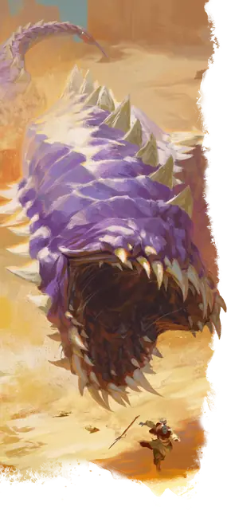

Лиловый червь
Purple Worm
Громадное Чудовище, без мировоззрения

Класс Защиты 18 Инициатива +3 (13)
Хиты 247 (15к20 + 90)
Скорость 50 футов, Копания 50 футов
| мод | спас | ||
|---|---|---|---|
| СИЛ | 28 | +9 | +9 |
| ЛОВ | 7 | −2 | −2 |
| ТЕЛ | 22 | +6 | +11 |
| мод | спас | ||
|---|---|---|---|
| ИНТ | 1 | −5 | −5 |
| МДР | 8 | −1 | +4 |
| ХАР | 4 | −3 | −3 |
Чувства пассивное Восприятие 9, Слепое зрение 30 футов, Чувство вибрации 60 футов
Языки нет
Опасность 15 (13 000 опыта; БВ +5)
Особенности
Прокладывание тоннеля. Червь может перемещаться сквозь сплошной камень со Скоростью копания, уменьшенной вдвое, оставляя за собой тоннель диаметром 10 футов.
Действия
Мультиатака. Червь совершает одну атаку Укусом и одну атаку Хвостовым жалом.
Укус. Бросок рукопашной атаки: +14, досягаемость 10 фт. Попадание: 22 (3к8 + 9) Колющего урона. Если цель — существо Большого размера или меньше, она Схвачена (Сл освобождения от захвата 19); пока длится захват, она также Опутана.
Хвостовое жало. Бросок рукопашной атаки: +14, досягаемость 10 фт. Попадание: 16 (2к6 + 9) Колющего урона плюс 35 (10к6) урона Ядом.
Бонусные действия
Проглатывание. Спасбросок Силы: Сл 19, одно Схваченное червём существо Большого размера или меньше (червь может держать проглоченным до трёх существ одновременно). Провал: Цель становится проглоченной червём, а состояние Схваченный оканчивается. Проглоченное существо Ослеплено и Опутано, а также имеет Полное укрытие от атак и прочих эффектов, исходящих снаружи червя; кроме того, оно получает 17 (5к6) урона Кислотой в начале каждого хода червя.
Если червь получает за один ход не менее 30 урона от проглоченного существа, в конце этого хода он должен совершить спасбросок Телосложения Сл 21; при провале он отрыгнёт всех проглоченных существ, которые падают Опрокинутыми в пространстве в пределах 5 футов от червя. Если червь умирает, проглоченное существо теряет состояние Опутанный и может освободиться из трупа, потратив 15 футов перемещения и оказываясь на выходе Опрокинутым.
Бонус мастерства +5
Среда обитания Подземье, Пустыня
Сокровища Отсутствуют
Лиловый червь
Тварь, что гложет корни мира
Исполинские лиловые черви прогрызают ходы в земле и песке. Вечно голодные, они пожирают мелких существ и бездумным рытьём разоряют целые поселения.